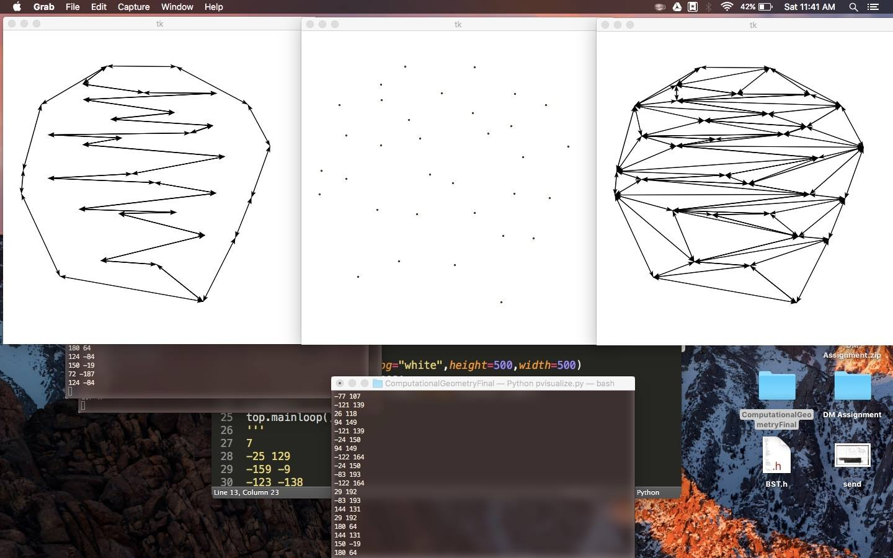
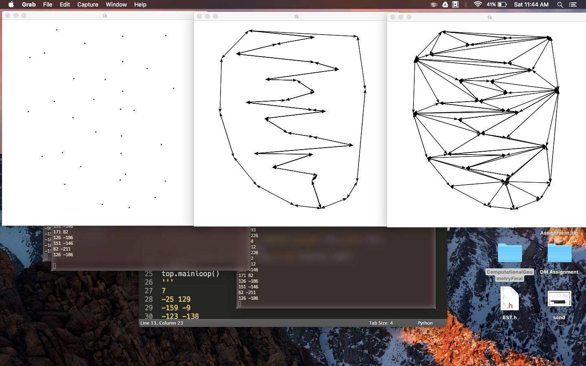
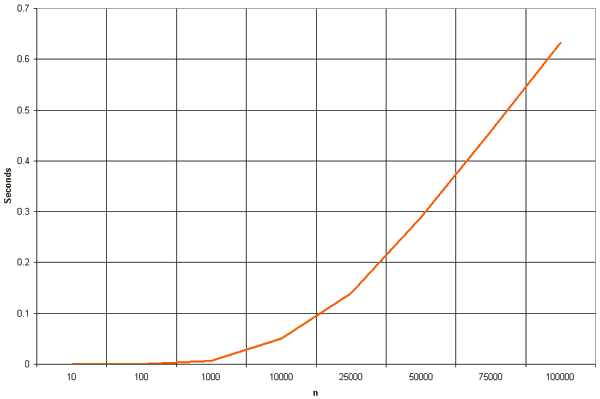
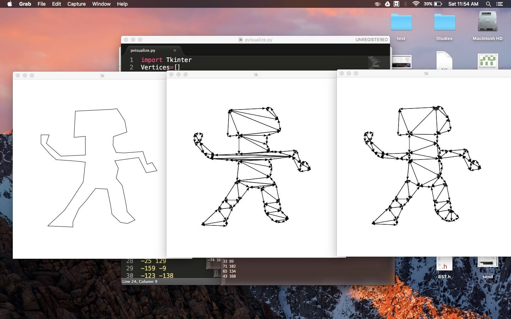
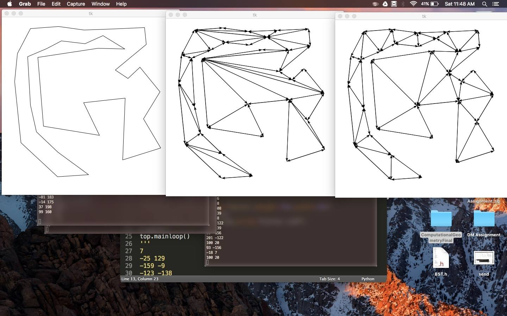
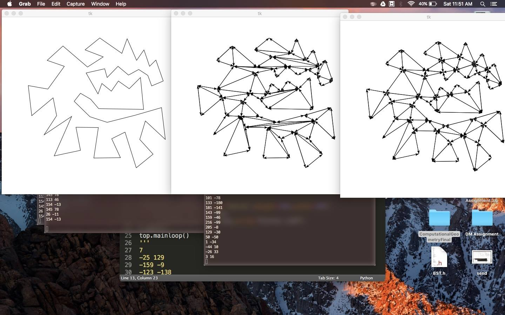

POINT SET TRIANGULATION
Method :
Challenges:
The main challenge in Point set triangulation was to merge the left and right DCEL. We found a hack by not doing this and instead displaying the output for both left and right hafs one after other.
This will be a valid triangulation although it won't work for delaunay triangulation because the edges that split the convex hull will never be flipped.
Apart from this the good design of API for convex hull and triangulation helped in making the task easier.
IMAGES:


Analysis:

Delaunay triangulation for a set P of points in a plane is a triangulation DT(P) such that no point in P is inside the circumcircle of any triangle in DT(P).
Delaunay triangulations maximize the minimum angle of all the angles of the triangles in the triangulation.
They tend to avoid sliver triangles
A triangulation is a subdivision of a planar object into triangles, and by extension the subdivision of a higher-dimension geometric object into simplices.
Triangulations of a three-dimensional volume would involve subdividing it into tetrahedra ("pyramids" of various shapes and sizes) packed together.
A simplices is a generalization of the notion of a triangle or tetrahedron to arbitrary dimensions.
Specifically, a k-simplex is a k-dimensional polytope which is the convex hull of its k + 1 vertices.
A triangle is a polygon with three edges and three vertices.
the circumscribed circle or circumcircle of a polygon is a circle which passes through all the vertices of the polygon. The center of this circle is called the circumcenter and its radius is called the circumradius.
Algorithm:
If a triangle is non-Delaunay, we can flip one of its edges.
This leads to a straightforward algorithm: construct any triangulation of the points, and then flip edges until no triangle is non-Delaunay.
Unfortunately, this can take Ω(n2) edge flips.
While this algorithm can be generalised to three and higher dimensions, its convergence is not guaranteed in these cases, as it is conditioned to the connectedness of the underlying Flip Graph
Flip Graph is connected for two dimensional sets of points, but may be disconnected in higher dimensions.
Challenges:
In some cases the code of constrainted delaunay triangulation due to the flip of same edge again and again the code ran into infinte loop.
IMAGES:


